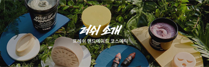
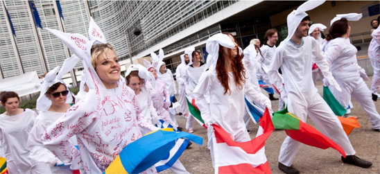
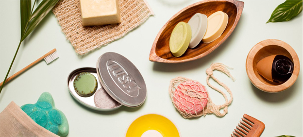
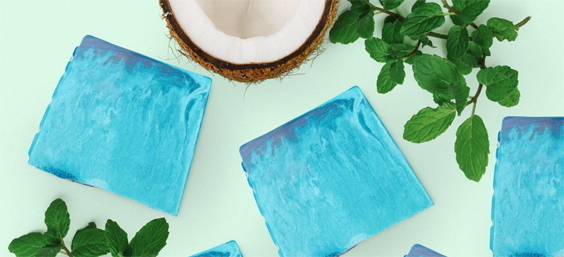
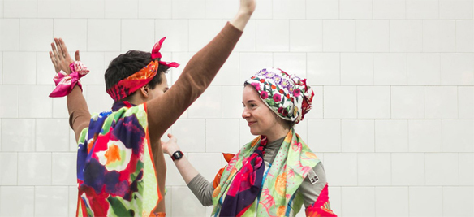

소개

"러쉬는 자연에서 얻은 신선한 재료와 동물실험을 하지 않는 정직한 재료를 사용하여 모든 제품을
손으로 만듭니다."
더불어 공정 거래, 인권보호, 최소한의 포장 등 다양한 캠페인 활동을 통해 기업
윤리와 신념을 알리고 있습니다.

러쉬는 어떤 이유에서도 제품을 동물실험 하지 않고,
동물실험을 거친
원재료조차 사용하지 않습니다.
직접 구매팀을 운영하며, 엄격한 기준을 바탕으로 윤리적인 공정 여부를 확인합니다.
믿을 수 있는 생산자로부터 직거래를 원칙으로 합니다.

러쉬는 배쓰밤, 샤워젤리, 고체 샴푸와 같은 기발하고
혁신적인 제품을 선보입니다.
특히 불필요한 포장을 없앤 고체 형태의 다양한 '네이키드(Naked)' 제품을
개발하며 화장품 산업에서 혁명을 일으켜 왔습니다.

신선함은 러쉬 철학의 핵심입니다.
신선한 과일, 채소, 에센셜 오일, 최소한의 보존제와 안전한 인공 성분을 사용하여 제품을 선보입니다. 러쉬의 모든 제품은 베지테리언(Vegetarian)이며, 그 중 약 90%는 식물성 원료로만 만든 비건(Vegan)입니다.

이 모든 것은 '고객은 항상 옳다'는 믿음과 러쉬의 핵심 가치인 직원들의 진심이
모여 얻은 결실입니다.
앞으로도 러쉬는 현시대에 필요한 제품과 서비스를 제공할 것입니다. 환경 보호를 위해
고민하고, 동물과 자연 그리고 사람이 조화로운 세상을 만들기 위한 도전과 혁신에
앞장섭니다.
∧